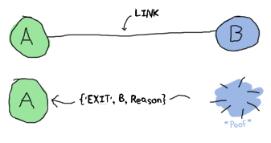

.left-column[ ## Historical context ### - Ericsson ] .right-column[ - founded by Lars Magnus Ericsson - since 1876 - Bell Labs could not compete in Scandinavia - Ericsson was almost monopoly telecom company in region during XX century .center[ <img src="img/Lars-Magnus-Ericsson.jpg" width="30%"> <img src="img/Ericsson-phone.jpg" width="30%"> <img src="img/Ericsson-mobiles.jpg" width="50%"> ] ] --- .left-column[ ## Historical context ### - Ericsson ### - AXE/PLEX ] .right-column[ - It's 1984 now! - AXE telephone exchange (since 1974) - PLEX (cross between Fortran and a macro assembler) - Berkeley introduced UNIX 4.2 BSD - UNIX can run on different architecures including VAX (CISC) ] .center[ <img src="img/AXE-10.jpg" width="50%"> **Motivation is "to make something like PLEX, to run on ordinary hardware, only better"** ] --- .left-column[ ## Historical context ### - Ericsson ### - AXE/PLEX ### - Telecom requirements ] .right-column[ - Handling a very large number of concurrent activities - Systems distributed over several computers - Interaction with hardware - Very large software systems - Continuous operation over several years - Software maintenance (reconfiguration, etc.) without stopping the system - Stringent quality and reliability requirements - Fault tolerance both to hardware failures and software errors ] --- .left-column[ ## Historical context ### - Ericsson ### - AXE/PLEX ### - Telecom requirements ### - R&D ] .right-column[ - Erlang = Ada, EriPascal, Chill, PLEX, Euclid + ML, Smalltalk, Prolog - Erlang was meta-interpreter in Prolog by **Joe Armstrong** (1985) - Erlang with own VM created by **Mike Williams** in C is 70 times faster (1990) - In 1995 AXE-N project (telephone exchange in C++) collapsed, reorganised and re-started in Erlang as **AXD** ATM .center[ <img src="img/PLEX-Erlang.png" width="75%"> ] ] --- .left-column[ ## Historical context ### - Ericsson ### - AXE/PLEX ### - Telecom requirements ### - R&D ### - Nine nines ] .right-column[ - In 1998 were announced GPRS system prototype and AXD301, 10-160 Gbps ATM switch - Source code contains 1.5M lines of Erlang (main complex control logic) and 0.5M lines of C/C++ (device drivers) - Designed from scratch in less than 3 years - One of the customers was British Telecom (the largest voice ATM station in the world) - During trial period (first 5 years) only 1 minor issue occurred. - 99.9999999% reliability (downtime is 31 ms per year) .center[ <img src="img/AXD301.png" width="70%"> ] ] --- .left-column[ ## Erlang VM ### - Concurrency ] .right-column[ <img src="img/concurrency-vs-parallelism.png" width="100%"> ] --- .left-column[ ## Erlang VM ### - Concurrency ] .right-column[ - True parallelism: **Java, C++, Fortran** - real UNIX threads are heavy - requires very high developer skill - overhead for processes sync and management (MPI, OpenMP etc) - race conditions, deadlocks, - Concurrency: **JavaScript, Lua, Python, Ruby, etc...** - actually, only one UNIX thread for all - ... but concurrent apps still can have problems with deadlocks / race conditions - because of only one real thread, one fat concurrent task will affect all application ```javascript (() => {for (i = 0; i <= 1000000; i++) {console.log(i)}})() ``` ] --- .left-column[ ## Erlang VM ### - Concurrency ] .right-column[ - Erlang VM is cross between **true parallelism** and **concurrency** ``` Single modern Erlang node (with SMP) +--------------------------------------------------------+ | | | +-----------------+-----------------+ | | | | | | | | Scheduler # 1 | Run Queue # 1 <--+ | | | | | | | | +-----------------+-----------------+ | | | | | | +-----------------+-----------------+ | | | | | | | | | | Scheduler # 2 | Run Queue # 2 <----> Migration | | | | | | Logic | | +-----------------+-----------------+ | | | | | | . | | | . | | | . | | | | | | +-----------------+-----------------+ | | | | | | | | | | Scheduler # N | Run Queue # N <--+ | | | | | | | +-----------------+-----------------+ | | | +--------------------------------------------------------+ ``` ] --- .left-column[ ## Erlang VM ### - Concurrency ] .right-column[ - Erlang is OS inside OS (all complexity is hidden inside Erlang VM) ] --- .left-column[ ## Erlang VM ### - Concurrency ### - Processes ] .right-column[ To obtain scalability and fault tolerance is quite easy. You took 2 things, you make them **share nothing** and you get fault tolerance and you can scale. (c) Joe Armstrong - private mailbox - private heap - private GC (not blocking other processes) - private immutable state ] --- .left-column[ ## Erlang VM ### - Concurrency ### - Processes ### - Cluster ] .right-column[ - Clusterisation is standard OTP feature - EPMD just works, developer don't care about details - Function `send` is location-transparent - PID contains info about process location - Still **no shared memory** ] --- .left-column[ ## Erlang VM ### - Concurrency ### - Processes ### - Cluster ### - Links ] .right-column[  - By default process A knows nothing about problems in process B - When process is terminated, it emits **exit signal** (like in normal OS) - Standard functions `link` / `spawn_link` can establish link between processes - Also we can catch exit signals using `Process.flag(:trap_exit, true)` ] --- .left-column[ ## Erlang VM ### - Concurrency ### - Processes ### - Cluster ### - Links ### - Code swap ] .right-column[ <img src="img/code-2.png" width="45%"> ] --- .left-column[ ## Erlang VM ### - Concurrency ### - Processes ### - Cluster ### - Links ### - Code swap ### - OTP ] .right-column[ ] --- class: center, middle # Thanks [back to index](index.html)